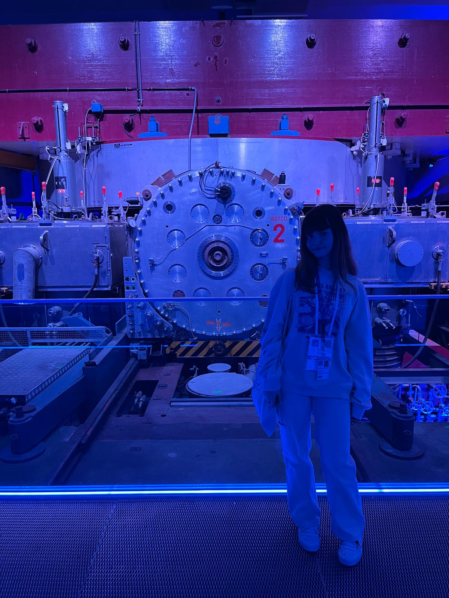
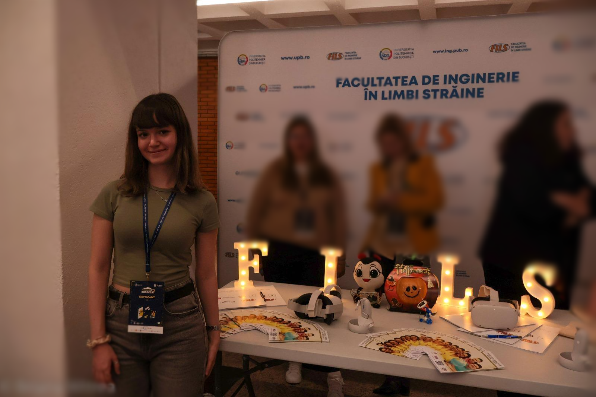
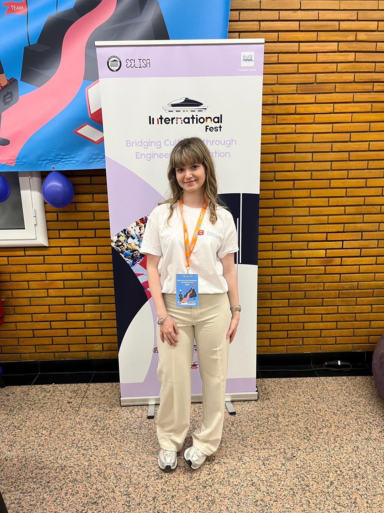
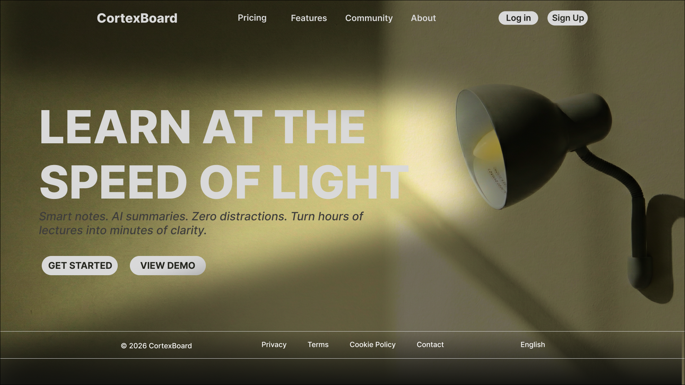

A Computer Engineering student navigating the intersection of technology, problem-solving, and real human connection.
Consider this a fair warning: this isn't your typical, perfectly curated online portfolio. You'll find both my best qualities and my glaring 'work-in-progress' areas — a real, unfiltered look at my journey as I figure things out.
Download CVWelcome to my digital corner. If you're reading this, you probably already saw my CV — but a standard PDF could never tell the whole story.
I built this space because I believe a one-page CV shouldn't limit or define who we are. Instead of presenting a polished list of achievements, I will admit I don't have all the answers, and I certainly don't have a strict master plan for the future. But I choose to enjoy the messy, exciting process of getting there.
Take a look around, and I hope you get to know the real me.
It's less about the tools I use and more about the mindset I bring. Here are the core beliefs that truly define how I work and grow.
I'm genuinely not afraid to make mistakes. In fact, I welcome them. Every misstep, wrong turn or negative experience is exactly what shaped who I am today.
A lifelong passion for foreign languages, chess and puzzles has wired my brain to spot patterns and see the bigger picture. Today, I use the same mindset to bring ideas, people and tech together into cohesive products — connecting the dots where others see scattered pieces.
Right before my Cambridge exam, I sprained my ankle and caught a horrible cold. A blessing in disguise: stuck at home, I did nothing but study, and scored higher than I even expected. To me, there's no such thing as losing. I am always walking away with either concrete results, or valuable experience.
It took me years to realize this, and even longer to build that discipline. I'm organized, resilient, and learning to embrace the unknown — practicing patience, accepting that true growth is a lifelong process, not a destination.
I graduated as Valedictorian with a perfect 10 average and a 9.93 on my Baccalaureate — but those years were about way more than just grades. Competing at the national stages of the French and English Olympiads, packing for my first Erasmus mobility, or getting my first taste of tech at a robotics camp — this built the foundation for everything I'm doing now.

Getting into the CERN high-school internship wasn't a walk in the park — only 24 students were selected out of 350 across the country. It was my first real look behind the scenes of macro-scale data analysis and infrastructure, pushing me way out of my comfort zone to understand and pitch complex tech concepts to an intimidating, international public.

Choosing a French-taught Computer Engineering program was a deliberate step to mix tech with my love for languages. But I wanted to do more than just attend lectures. I earned a Web Programming certification, joined the RoboForgers club, and became the voice for over 1,500 students in the Faculty Council — a role that keeps teaching me the true meaning of responsibility and teamwork.
In just one month, I jumped into the chaos of event logistics at Poli International Fest and the Hardcore Entrepreneur final. At the same time, I wanted to officially back up my skills, so I earned my PMI (Project Management Ready) certification. My favorite moment: the Scientific Communications Session — pitching UNISCHED end-to-end and walking away with an honorable mention, a huge win for a first-year student.

What this timeline doesn't show: the sleepless nights, the moments I completely questioned my career path, the C++ code that wouldn't compile, and the many times I felt totally lost.
I'm sharing the highlights here, but the real growth always happened in the messy moments between these milestones. Right now, I am exactly where I need to be: grateful for the journey that brought me here, and excited to figure out what comes next.
My focus is the sweet spot between strategy, management, and tech — leveraging AI tools to build and organize efficiently, rather than being a traditional, hardcore programmer. As I prepare for my next big step, an Erasmus scholarship abroad, I'm looking for projects and people that value adaptability and a fresh perspective over a standard technical checklist.
I'm open, I'm learning, and I'm looking for the next puzzle to solve.
The Concept
University timetables are often chaotic, with overlaps and gaps that frustrate everyone. UNISCHED is an AI platform built to fix this by automating and optimizing the scheduling process.
My Role
I built the frontend and structured the UI with HTML and Tailwind CSS, focusing on a clean, intuitive experience. But I went beyond the visuals — I took full ownership of the product narrative and pitched the entire platform at the Scientific Communications Session.
A Digital Space for Focus

The Concept
I wanted to see how a clean, minimalist design could actually improve daily focus. CortexBoard started as a personal challenge to build a digital space that prioritizes mental clarity and a seamless user experience.
My Role
I handled the entire design and structure — mapping the visual flow in Figma, then bringing it to life with HTML and CSS. I'm currently integrating JavaScript and backend logic to make it fully functional.